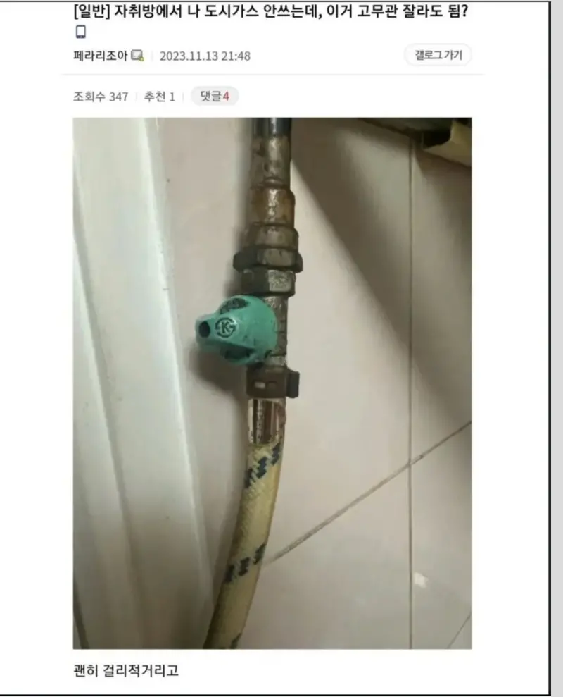
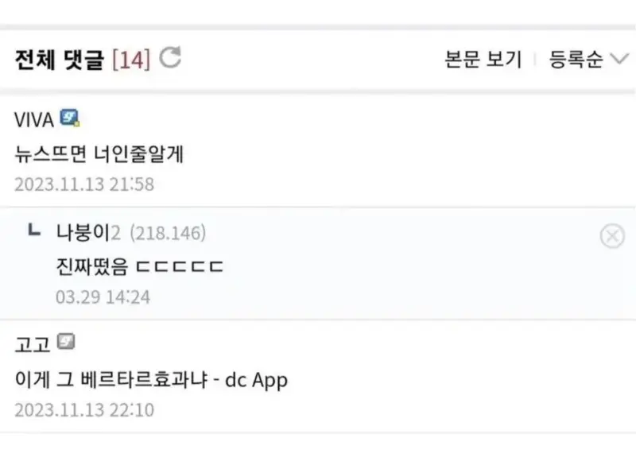
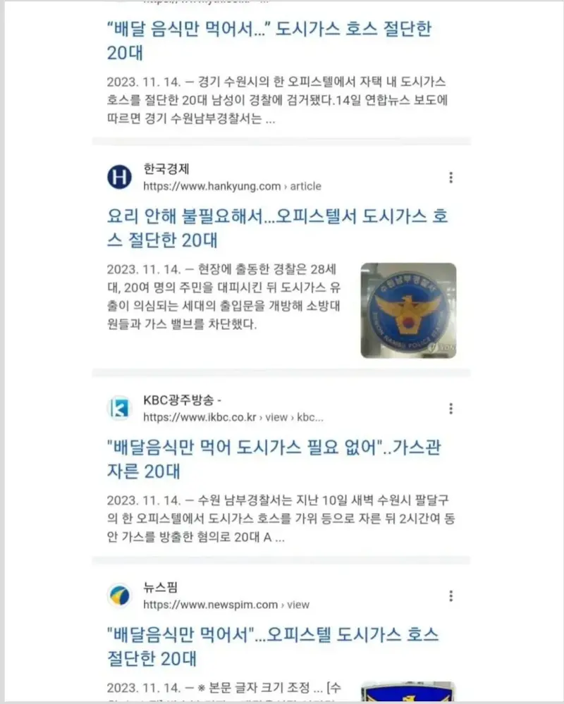

저 밸브가 은근 약함
그래서 도시가스로 연락해서 가스레인지 안쓴다고 얘기하면 완전 막아줌
멀쩡하면 새지는 않은데 보통 교체 안하고 오래 쓰니까 기밀이 약해져서 샐 수도 있음
사실 그거 말고도 실수로 벨브 건드리면 바로 새는 건데 위험하지
밸브가 한국 싫어함

사실 나도 몰랐음
?
잘라야 될 필요성을 못 느끼니까 이걸 자르면 되나 안되나까지 생각할 필요도 없더라고
아 닉값 ㅇㅋ
' 몰 랐 어 '


아이큐 검사하면 두자릿수 나올라나
돌고래와 좋은 승부 가능
돌고래가 이길거같은데
그럼 돌고래와 나쁜 승부 가능
벨브 아래건 상관없음. 소방법 개정 이전에 지어진 건물은 외부에서 벨브 있는곳까지 고무호스여서 그걸 자른게 문제된거.
저건 놀리는게 아니고 진짜 지능의 문제임
생각보다 저런 사람들 있더라
이사갈 때 그냥 호스만 뚝 잘라서 가는 사람도 있음
가스(유독하다) > 가스호스(유독한 가스가 이동하는 통로이다) > 가스 호스를 자르면 가스가 새어나올 가능성이 있다
이런 기본적인 논리적 사고가 돌아가지 않는거 보면 진짜 동물과 좋은 대결 가능한 능지임
저거 하나로 그냥 능지부터 사회성 인간관계 부모님의 생존 여부까지 체크가능
근데 집에 가스 안쓴다고 하니깐 어디서 나와가지고 호스 잘라주고 가던데
자르고 저 끝부분에 캡으로 막아서 마감하지
냅다 자르고 땡하는 게 아니라
밸브 막고 자르면 안 세는게 정상 아닌가?
13일에 작성된 글인데 기사 보면 10일에 일어난 사건이라고 나옴
https://www.yna.co.kr/amp/view/AKR20231114066600061
안쓰는데 왜 자르는거임? 걍 냅두면 되자나
위에 볼밸브 잠겨있는데 가스가 새나?